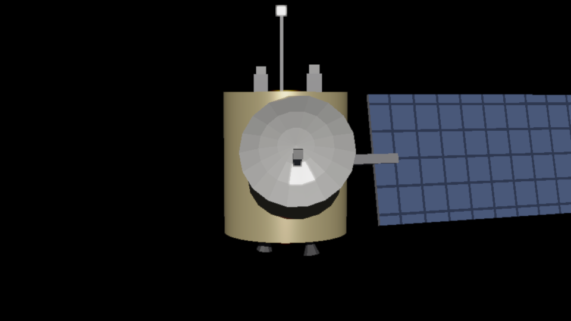

Take telescope pictures · watch satellite phases · read RA/DEC coordinates · tag & fit an orbit · radar range⁴ & integration
📷 Take a picture — the two kinds of streaking
A tracking telescope takes a time exposure. What streaks depends on what the mount tracks. Hold on the stars and satellites draw streaks; lock onto a satellite and the stars streak instead. Either way, the streak is data — its endpoints are two timed positions.
exposure drift: 1° = one GEO slot
Live, whatever the mount is not tracking drifts as a moving point (track the stars and the satellite drifts; track the satellite and the stars drift). Press TAKE A PICTURE to develop a 4-minute exposure and see what streaks. In 4 minutes the sky drifts exactly 1° (the width of one geostationary slot).
🌒 The phases of a satellite — reflected sunlight
A satellite shines only by reflected sunlight, so — exactly like the Moon — it shows phases. Slide the Sun angle and watch a real rendered GEO satellite go from fully lit, through a bright specular glint, to nearly dark when back-lit. The inset shows the geometry: where the Sun is, and that you are looking up at it from the ground.

A real GEO satellite (gold-foil bus, dish, solar wing), lit from the Sun angle you choose below.
Top view: the incident sunlight arrow, and your eye looking up from the ground. The angle between them is the phase angle.
Light curve: apparent magnitude vs phase angle (fainter = higher up). The red dot is the current geometry. Glint ≈ mag 4, faintest back-lit ≈ mag 14 — a 10-magnitude swing, 10,000× in brightness (5 mag = 100×).
🌐 Right Ascension & Declination — latitude & longitude for the sky
Astronomers paint a coordinate grid on the sky, just like latitude/longitude on the Earth. Declination (Dec) is the north–south angle (like latitude): +90° at the north celestial pole, 0° on the celestial equator, −90° at the south. Right Ascension (RA) is the east–west angle around the equator (like longitude). Here the Earth sits at the center of the celestial sphere; drag to rotate the whole view. The green ray is the direction to one object, tagged with its (RA, Dec) in decimal degrees.
RA 60.0°Dec +30.0°
RA/Dec are fixed on the sky — they label a direction among the stars, not a spot over the ground. In this inertial (star-fixed) frame the Earth rotates underneath: a telescope bolted to the ground has its sight-line sweep through RA (right ascension) as the night goes on — but its Dec stays constant, because spinning about the polar axis changes only the east–west angle. A single image still gives just a direction (RA, Dec) — no distance; that needs parallax or radar.
🎯 Initial orbit determination — tag the satellite, watch the orbit converge
This is how it really works. The telescope tracks the satellite, so in each exposure the stars trail into streaks and the satellite stays a crisp point. Click that point. The plate-solver finds the centers of ~10 star streaks (their known catalog positions define the sky grid) and reads off the satellite's time, RA and Dec — each with a small ±σ ≈ 0.05″ measurement error. Each direction is a line of sight from Earth. Two sight-lines already pin the orbit's plane (their common plane through Earth's center); a third and beyond over-determine it, so the tiny measurement scatter turns into a finite uncertainty band — the translucent smear that tightens onto one orbit as you tag more exposures across the night.
exposure 1 / 6time t + 0.0 h
The telescope tracks the target, so stars streak and the satellite is the lone point — click it to plate-solve this exposure.
Astrometry — the satellite’s measured directions
STATUS: INDETERMINATE — 0 / 3+ sight-lines
Top-down view: Earth (to scale) at center; each tag casts a line of sight. The translucent gold band is the orbit's uncertainty (its angular thickness = the current ±1σ); it narrows onto the best orbit as tags accumulate, with dots where each sight-line pierces it. Left-drag pan · shift/right-drag rotate · wheel zoom.
📡 Radar — watch the pulse go out and the echoes come back
A ground radar (bottom) fires a pulse and times the echo — that timing IS the measurement: range = c·t/2. Press FIRE and watch the scope's sweep dot: it carries a running clock showing the time since the pulse left the dish, and each spike pops up the instant its echo lands. Farther = later (LEO at ~5 ms, GEO at ~281 ms) and farther = fainter — the pulse spreads going out and the echo spreads coming back, so received power falls as range⁴: GEO returns ~7.7 million× weaker than LEO (a true 69 dB; try the linear view to feel that ratio). GEO starts buried in the noise. To dig it out, set N > 1 and press START AVERAGING: the radar fires a stream of pulses, the echo adds up in its time bin while the random noise partly cancels, and SNR climbs as √N.
Top view: the pulse fades as it spreads (range² out), and the returning echo fades too (range² back) — watch GEO's ghost of an echo creep home long after LEO's has landed.
A-scope: horizontal is time since the pulse was sent (the sweep dot's clock shows it in real ms), vertical is dB — the honest spread is 69 dB, LEO to GEO. A spike only appears once its echo has actually returned, and fainter echoes make thinner spikes.
N = 1gain lifts signal AND noise — try integrating
This is monostatic radar (transmit and receive at the same site). One thing the sim deliberately does NOT offer: a receiver-gain knob. Amplifying the received signal lifts the echo and the noise by the same factor, so it can never make a buried target detectable — only integration (or more transmit power, a bigger dish, or a closer target) improves the signal-to-noise ratio. Just as an optical sensor can only see a sunlit target, a radar can only detect an echo whose SNR clears its threshold.